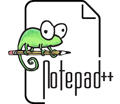

Los mejores editores HTML del 2020
Los mejores editores HTML tienen muchas funciones, y veremos eso y mucho
más
cuando repasemos nuestra lista de favoritos, todos son
gratuitos y para Windows,
aunque Dreamweaver solo te da un periodo de
prueba gratis.
Así como utilizamos todo tipo de herramientas
para ayudarnos con las tareas sencillas,
como la corrección
ortográfica al escribir, un editor HTML (Lenguaje de marcado de
hipertexto,
por sus siglas en inglés) no es diferente y te ayuda a enmendar los
errores
que se comenten al escribir código.
¿Qué es un editor de HTML?
En retrospectiva, un editor de HTML se utiliza para escribir la base de un
sitio web. Y
si bien cualquier editor de texto puede hacer este
trabajo, no significa que tengas que
hacerlo sin ningún tipo
de ayuda. Las funciones adicionales, la comprobación de
errores
y un editor más intuitivo en general, son cosas que pueden
facilitarte la vida
significativamente. Los fundamentos de los
editores de HTML son los mismos: te
ayudan a escribir código
resaltando las sintaxis, insertando elementos y estructuras
HTML de
uso común, y ofreciendo autocompletado.
¿que texto utiliza el editor HTML?
El texto que utiliza un editor HTML también se puede traducir a
otros lenguajes, como
CSS, XML o JavaScript. Pero como sabemos, no
todas las cosas están hechas de la
misma manera. Algunos
editores pueden ser más fáciles de usar, mientras que
otros
brindan mayor funcionalidad que otros.
¿Cuándo deberías usar un editor HTML?
La respuesta corta es, ¡siempre! Un editor de HTML
es invaluable tanto para
principiantes como para desarrolladores
más avanzados. Ya mencionamos las
características
básicas de los editores de HTML, como el resaltado de sintaxis,
la
inserción de elementos HTML comunes y el autocompletado.
Todo esto asegura que
tu código sea funcional y limpio con el
menor esfuerzo, permitiendo que sea mucho
más fácil
hacer lo que mejor sabes hacer: crear código.
Por ejemplo, el editor te notificará si olvidas colocar la etiqueta
final </ en un elemento
de código. Por lo tanto, no
deberías imponerte limitaciones al no utilizar ningún tipo
de
editor HTML.
¿Cuantos tipos de editores existen?
Existen dos tipos de editores: WYSIWYG y editores HTML textuales. Empecemos hablando del primer tipo.
WYSIWYG
WYSIWYG es el acrónimo de "What You See Is What You Get" (Lo que ves es lo que obtienes).
Estos editores proporcionan una interfaz
de edición que muestra cómo se ve el código en una
página web activa.
El uso de editores WYSIWYG no requiere
ningún
conocimiento de HTML; por lo tanto, es mucho más fácil
comenzar para un
usuario sin experiencia alguna en
programación.
Editor HTML textual
Como su nombre lo indica, los editores de HTML textuales se basan en
texto. Debes
tener conocimientos de HTML para utilizar este tipos de
editores. Las funciones
incluyen la apertura de archivos, ya sea un
solo archivo, un proyecto completo o
múltiples proyectos, y es
algo disponible en todos los editores. Al utilizar un editor
basado
en texto, no puedes ver una vista previa en vivo del sitio.
Este tipo
de editor puede ofrecer más libertad y opciones personalizadas. Con
un
editor textual, puedes optimizar mejor las páginas web para
los motores de búsqueda.
Por ejemplo, es posible crear una
página web que siga las Pautas de accesibilidad del
contenido
web (WCAG, por sus siglas en inglés), para que las personas con
discapacidades
puedan ver tu página web.
Lista de los mejores editores HTML en el 2020
Como ya hemos visto qué es un editor HTML y cuándo usarlo,
finalmente podemos
poner las manos en los editores reales y elegir el
mejor editor HTML.
Todos tenemos gustos diferentes, y cuando se trata
de elegir una plataforma para
nuestro trabajo, donde pasaremos mucho
tiempo, es importante elegir la que mejor se adapte a nosotros.
Todos
los editores tienes las mismas características básicas.
Sin
embargo, algunos ofrecen más representación visual
que otros, más paquetes
adicionales para instalar, entre otras
cosas.
La lista de los mejores editores HTML se basa en la popularidad, las
funciones y el
diseño:
1. Atom

El mejor editor HTML Atom
Atom es un editor relativamente nuevo que salió en el 2014 y ha
ganado un enorme
impulso desde entonces. Atom es un editor de
código, gratuito y de código abierto, y
fue
desarrollado por el equipo de GitHub. Atom usa una licencia de software
libre para
su paquete y es mantenida por la comunidad de GitHub. Su
objetivo es ofrecer una
experiencia premium en el editor, y a la vez
mantenerlo completamente gratis; además
de flexibilidad para
personalizar el software en sí.
En cuanto al eslogan, presumen
de ser el editor de texto más hackeable del siglo XXI.
Esto
significa que los desarrolladores pueden contribuir a editar, extender,
cambiar y
compartir el código fuente del programa, así
como crear sus propios paquetes para
mejorar Atom.
Ahora
revisemos las características clave de Atom.
Características clave
Atom viene con 81 paquetes incorporados y puedes agregar hasta 7,500
paquetes
instalables adicionales. También puedes desarrollar
tu propio paquete.
Editor de texto de código abierto. El
editor completo de Atom es un programa
gratuito y de código
abierto y está disponible en GitHub.
Atom soporta el teletipo
(Teletype). Esta es una característica importante si quieres
colaborar
con otros desarrolladores en tiempo real.
Soporta múltiples
paneles. Atom puede dividir la interfaz en muchas ventanas para
que
puedas comparar y escribir código lado a lado.
Diseño
Atom ofrece un diseño elegante con un aspecto premium.
¿Por qué los desarrolladores prefieren Atom?
Es personalizable. Atom es muy fácil de personalizar; se
puede modificar el aspecto
de la interfaz y agregar otras
características esenciales. También puedes construir
paquetes
y temas desde cero. O simplemente instala paquetes y temas
prefabricados
por la comunidad.
Atom en modo desarrollador.
-->Puedes experimentar agregándole características al
sistema
central.
Integración con Git y GitHub.
Edición multiplataforma. Atom funciona en todos los sistemas
operativos.
Disponible para: Windows, OS X y Linux (64 bits).
2. Notepad ++

El mejor editor HTML Notepad ++
Notepad ++ es un editor que fue desarrollado
para máquinas basadas en Windows.
Los
usuarios de Linux también pueden usarlo
a través de Wine. Este editor se
distribuye
como software libre y su repositorio también está disponible
en GitHub. Al
igual que otros proyectos de la comunidad, admite
plugins de terceros.
Notepad ++ se distingue por su simplicidad,
además es súper liviano; incluso hay una
versión
móvil si la necesitas. Aquí hay algunos puntos destacados:
Características clave
La interfaz de
Notepad ++ es simple, liviana y rápida.
Es compatible con el
entorno de programación en varios idiomas, desde
ActionScript,
CSS hasta Visual Basic.
100% compatible con Windows, aunque otros sistemas operativos no son
compatibles
(no hay software adicional)
¿Por qué los desarrolladores prefieren Notepad
++?
Es completamente gratis.
Extensible: puedes agregar plugins de la comunidad o crear los tuyos propios.
Personalizable: los desarrolladores pueden personalizar
las funciones y la interfaz
según sus preferencias.
Diseño
La interfaz de Notepad ++ es
minimalista, pero los desarrolladores pueden
personalizarla.
Disponible para:
Windows y Linux (a través de Wine)